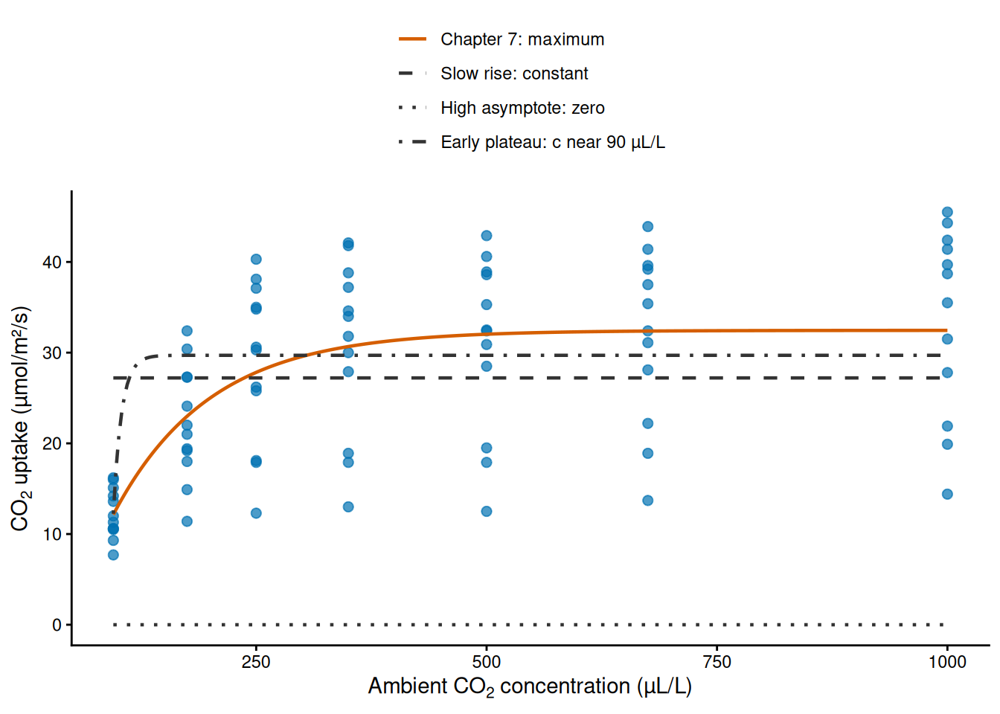
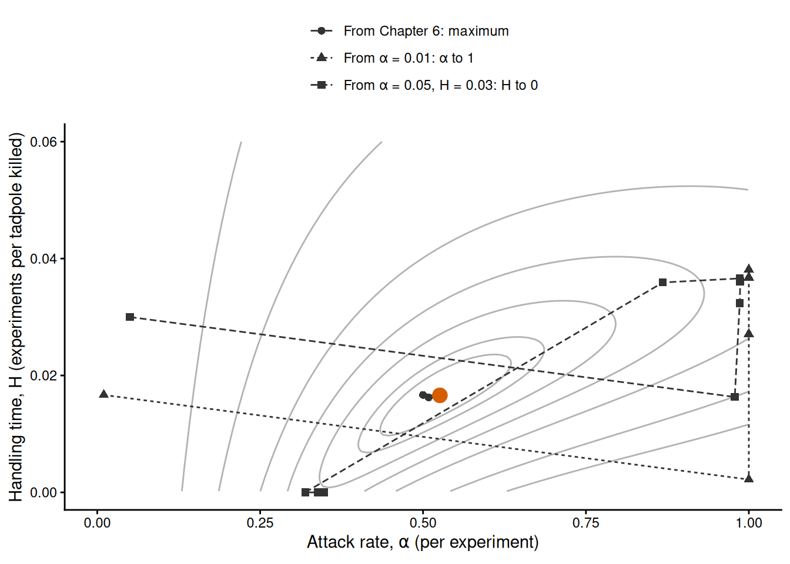
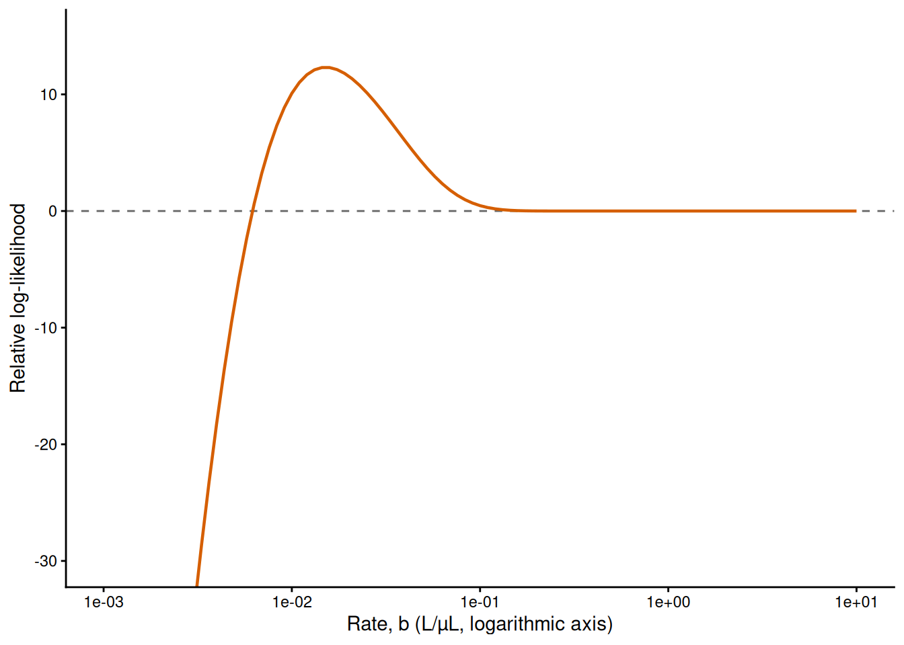
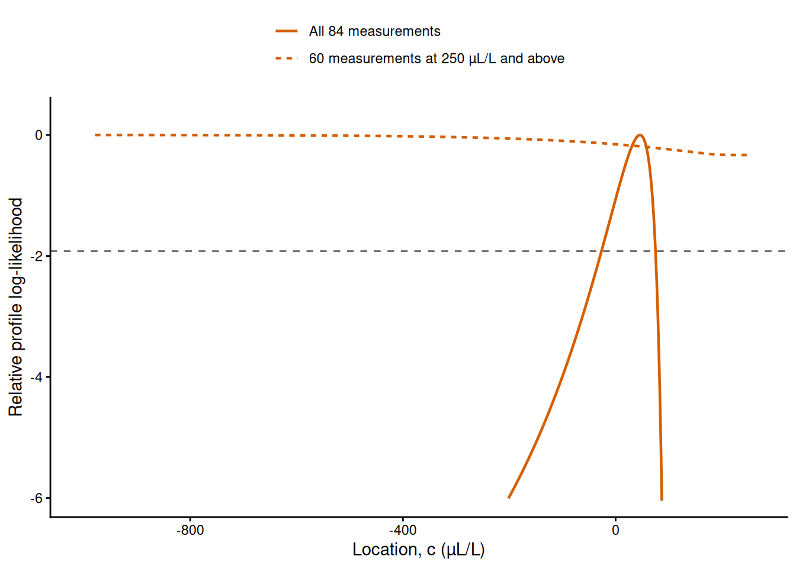

# Load RTMB first and RTMBdist second.
library(RTMB)
library(RTMBdist)
# CO2 uptake (µmol/m²/s) of 12 plants at seven concentrations of CO2 (µL/L), see ?CO2.
co2 = as.data.frame(CO2)
co2_data = list(conc = co2$conc, uptake = co2$uptake)
# Negative log-likelihood with one curve for all the plants (complete pooling).
pooled_nll = function(parms, data) {
getAll(parms, data)
a = exp(log_asym)
b = exp(log_rate)
sd_obs = exp(log_sd_obs)
# Expected uptake at the concentration of each measurement.
mu = a * (1 - exp(-b * (conc - c0)))
-sum(dnorm(x = uptake, mean = mu, sd = sd_obs, log = TRUE))
}Numerical optimisation
1 Introduction
In this chapter, we learn how to find the maximum of a likelihood when the optimiser does not find it by itself, and how to tell whether it has. Since Chapter 4 every fit has minimised a negative log-likelihood (NLL) with optim(), the BFGS method and the gradient that RTMB supplies, and from the starting values that we chose this has usually worked. An optimiser can, however, stop somewhere other than the maximum and still report a convergence code of zero. The practical of this chapter shows this with a Gamma model of penguin body masses whose fit stops after a single step, and the practical of Chapter 7 met it with fits that stopped at a practically zero variance among sites although the maximum lay at a positive one.
The chapter is organised by problem. Each section states a difficulty in general terms, shows it on a fit from an earlier chapter that goes wrong, explains as much of the mechanism as we need to understand it, and gives the remedy; there are no new data. What is new is how a gradient method searches, the difference between exact and approximate gradients, the stopping rules of an optimiser, how to diagnose a fit, multiple starting values, identifiability, estimates at a boundary, scaling and parameterisation, the local optimisers nlminb(), Nelder–Mead and optimize(), and global search with differential evolution. BFGS with the gradient of RTMB remains the method of the course; the other optimisers are the next tool when it fails. This is the last chapter, and it completes the line on estimation that started in Chapter 3.
2 Learning goals
In this chapter, we will cover:
- what an optimiser sees of a likelihood;
- how gradient methods search;
- exact and approximate gradients;
- stopping rules and convergence codes;
- diagnosing a fit;
- starting values and multiple starts;
- structural and practical non-identifiability;
- estimates at a boundary;
- scaling and parameterisation;
- other local optimisers;
- global search with differential evolution;
- a recipe for a difficult fit.
The examples are models that we fitted before: the CO₂ uptake curve of Chapter 7, the reed frog functional response of Chapter 6, and the owl calls and fir seedlings of Chapter 4.
The table below is a roadmap of the chapter. Each row is one problem, with how it shows in a fit, what to do about it and the R tools that we use.
| Problem | How it shows | What to do | In R |
|---|---|---|---|
| A fit that stops in the wrong place | absurd estimates, a warning that the Hessian is not positive definite | diagnose the fit | obj$gr(), sdreport(), a slice |
| Dependence on starting values | different minima from different starts | fit from multiple starting values | a for loop over optim() |
| A ridge, or a parameter that the data do not determine | huge standard errors, estimates that stay at their starting values | change the model or the data, or report it | sdreport(), TMB::tmbprofile() |
| An estimate at a boundary | a parameter that runs to \(\pm\infty\) on the optimised scale | recognise it and report the boundary | the estimates on both scales |
| Poor scaling or parameterisation | an early stop, highly correlated estimates | rescale or reparameterise | transformations, parscale |
| BFGS keeps failing | failures from many starting values | another optimiser; global search, then local | nlminb(), DEoptim::DEoptim() |
3 A fit that stops in the wrong place
An optimiser searches locally. At each point that it evaluates, it knows the value of the NLL, \(-\ell(\boldsymbol\theta)\), and its gradient there, and nothing else; it never sees the whole surface that we drew for two parameters in Chapter 4. The gradient \(\mathbf g(\boldsymbol\theta)\) is the vector of partial derivatives of the NLL with respect to the parameters (Chapter 6), and the Hessian \(\mathbf H(\boldsymbol\theta)\) is the matrix of its second derivatives, which measures the curvature of the NLL (Chapter 4). From these local quantities the optimiser decides where to go next, so where it ends depends on where it started and on the shape of the surface along the way.
A few kinds of points matter for where a search can end. A local minimum of the NLL is a point that is lower than all the points near it, and the global minimum is the lowest point of all. A stationary point is a point at which the gradient is zero: a minimum, a maximum, or a saddle point, at which the NLL rises in some directions and falls in others. A ridge is a direction along which the likelihood, and so the NLL, changes very little; on the scale that is optimised it often runs towards \(\pm\infty\). The maximum likelihood estimate is the global minimum of the NLL, but an optimiser can also stop at a local minimum or near a saddle point, and on a ridge, where the gradient is practically zero although the point is not a stationary point in the strict sense.
We will use the complete-pooling model of the CO₂ uptake of 12 plants of Chapter 7 to illustrate these points. It describes all 84 measurements with one saturating exponential, \(\mu(x)=a\left(1-e^{-b(x-c)}\right)\), where \(a\) is the asymptote (µmol/m²/s), \(b\) the rate (L/µL) and \(c\) the concentration at which the expected uptake is zero (µL/L), and with a Normal distribution of the measurements around the curve with standard deviation \(\sigma_{\mathrm{obs}}\). We load the packages and the data, and write the NLL as in Chapter 7:
Chapter 7 read its starting values from a figure of the data: an asymptote of 30 µmol/m²/s, zero uptake at 50 µL/L, a rate of 0.01 L/µL and a standard deviation of 2 µmol/m²/s. From these values BFGS reaches the maximum:
# Connect a likelihood to a data set.
cmb = function(f, d) function(p) f(p, d)
# Process the NLL with the starting values of Chapter 7, and fit it.
pooled_obj = MakeADFun(
cmb(pooled_nll, co2_data),
list(log_asym = log(30), log_rate = log(0.01), c0 = 50, log_sd_obs = log(2)),
silent = TRUE
)
pooled_fit = optim(
par = pooled_obj$par,
fn = pooled_obj$fn,
gr = pooled_obj$gr,
method = "BFGS"
)
pooled_fit$convergence[1] 0Other starting values are just as plausible readings of the same figure. Several plants are still rising at the highest concentration, which suggests a slow approach to the asymptote (\(b=0.001\) L/µL, so that the curve reaches 63% of its asymptote 1000 µL/L above \(c\)). An asymptote of 100 µmol/m²/s assumes that the curve is far from levelling off over the range of the data. The chilled plants from Mississippi level off almost at once, at about 10 µmol/m²/s, which suggests a fast rate (\(b=1\) L/µL) and zero uptake just below the lowest concentration of 95 µL/L (\(c=90\) µL/L). We fit the model from each of these starting values, with the same object, by giving optim() the starting values on the optimised scales:
# Three other sets of starting values on the original scale: asymptote (µmol/m²/s),
# rate (L/µL), location (µL/L) and standard deviation (µmol/m²/s).
other_starts = rbind(
slow_rise = c(a = 30, b = 0.001, c = 50, sd_obs = 2),
high_asymptote = c(a = 100, b = 0.01, c = 50, sd_obs = 2),
early_plateau = c(a = 10, b = 1, c = 90, sd_obs = 2)
)
# Fit the model from each set, transformed to the optimised scales.
stop_fits = list()
for (start_name in rownames(other_starts)) {
s = other_starts[start_name, ]
start = c(
log_asym = log(s[["a"]]),
log_rate = log(s[["b"]]),
c0 = s[["c"]],
log_sd_obs = log(s[["sd_obs"]])
)
stop_fits[[start_name]] = optim(
par = start,
fn = pooled_obj$fn,
gr = pooled_obj$gr,
method = "BFGS"
)
}A small table collects the convergence code, the minimum of the NLL and the estimates on the original scale of the four fits:
# Every fit, with the one from the starting values of Chapter 7 first.
co2_fits = c(list(chapter_7 = pooled_fit), stop_fits)
# Convergence code, minimum of the NLL and estimates on the original scale.
stop_table = data.frame(
convergence = rep(NA, length(co2_fits)),
nll = NA, a = NA, b = NA, c = NA, sd_obs = NA,
row.names = names(co2_fits)
)
for (fit_name in names(co2_fits)) {
fit = co2_fits[[fit_name]]
stop_table[fit_name, ] = c(
fit$convergence,
fit$value,
exp(fit$par[["log_asym"]]),
exp(fit$par[["log_rate"]]),
fit$par[["c0"]],
exp(fit$par[["log_sd_obs"]])
)
}
signif(stop_table, 4) convergence nll a b c sd_obs
chapter_7 0 296.3 3.246e+01 9.534e-03 45.83 8.231
slow_rise 0 318.7 2.721e+01 5.154e+11 49.89 10.750
high_asymptote 0 402.8 3.679e-107 3.788e-19 50.29 29.260
early_plateau 0 302.3 2.971e+01 1.121e-01 90.27 8.847All four fits report convergence code 0, but only the first reaches the minimum of the NLL, 296.26. The other three stopped in three different places, each with a curve that is easy to recognise (Figure 1):
- From the slow rise, the rate ran to about \(5\times10^{11}\) L/µL. The curve then jumps to its asymptote just above \(c\) and is flat over all the measured concentrations, so it is the model without a curve: its asymptote, 27.2 µmol/m²/s, is the mean of all 84 measurements, and its standard deviation is that of the measurements (NLL 318.68).
- From the high asymptote, both the asymptote and the rate ran towards zero. The curve predicts no uptake at all, and the standard deviation of 29.3 µmol/m²/s absorbs the whole size of the measurements (NLL 402.79).
- From the early plateau, the location stopped at 90.3 µL/L, just below the lowest concentration, with a fast rate and an asymptote of 29.7 µmol/m²/s: a curve that rises steeply below the first concentration and is nearly flat above it (NLL 302.32).
In each case BFGS stopped because its stopping rule was satisfied, and the rest of this section explains how a search reaches such a point, why it stops there, and how we can tell.

3.1 How a gradient method searches
A gradient method moves downhill. The negative gradient, \(-\mathbf g(\boldsymbol\theta)\), points in the direction in which the NLL falls fastest, so the simplest method takes a step in that direction, evaluates the NLL and the gradient at the new point, and repeats. How far to step is decided by a line search: the method tries a step of some length along the chosen direction and shortens it until the NLL falls by enough. Following the steepest slope alone is slow in a narrow, tilted valley, such as the surface of correlated estimates in Chapter 4, because the steepest direction points across the valley rather than along it.
Newton’s method also uses the curvature. Near a minimum the NLL is close to a parabola, the quadratic approximation of Chapter 4, and Newton’s method jumps to the minimum of the parabola that has the gradient and the Hessian of the current point. Close to the minimum this is fast, because the parabola describes the NLL well there. Far from it the parabola can be a poor description: the jump can be far too long, and where the curvature is negative in some direction, the parabola has no minimum and the step can go uphill. BFGS, the method that we have used since Chapter 4, is a quasi-Newton method: it takes steps like those of Newton’s method, but with an approximation of the curvature that it builds from the gradients of successive steps (two nearby gradients that differ show how the slope changes, which is what the curvature measures). So it needs only fn and gr, and it becomes about as fast as Newton’s method once it is close to a minimum. The method is named after Broyden, Fletcher, Goldfarb and Shanno, who published it independently in 1970.1
Newton’s method still has a place in this book: RTMB uses it for the inner optimisation of a model with random effects (Chapter 7), where automatic differentiation supplies the exact second derivatives that it needs and the search starts close to the minimum.
Whatever the method, the consequence is the same: a gradient method follows the slope from wherever it starts, so it ends at the minimum, ridge or boundary to which the slope leads. Figure 2 shows three searches on the likelihood surface of the reed frog functional response of Chapter 6, a Binomial model with the Holling type II curve and two parameters, the attack rate \(\alpha\) and the handling time \(H\). BFGS works with \(\operatorname{logit}(\alpha)\) and \(\log(H)\), so the edges of the figure, \(\alpha=1\) and \(H=0\), lie at \(+\infty\) and \(-\infty\) on the scales that it searches. From the starting values of Chapter 6 it reaches the maximum in five steps. From a small attack rate, the first step goes along the steep gradient and is so long that \(\alpha\) jumps to practically 1, and the search ends there, on the edge, at an NLL of 59.77 against 46.72 at the maximum. From a third start the search first runs close to the same edge and then jumps to \(H\) practically 0, where it ends at 52.22. We return to these two fits in Section 5.3.

3.2 Exact and approximate gradients
When optim() is not given gr, it approximates the gradient. Each partial derivative is replaced by a finite difference, the change in the NLL between two nearby values of one parameter divided by the distance between them, as in Chapter 5. optim() uses two evaluations of the NLL for each parameter, one on each side of the current value, so each approximate gradient of a model with \(p\) parameters costs \(2p\) extra evaluations. The distance between the two values is a compromise. A large distance makes the straight line between the two points a poor approximation of the slope at the point, and a very small one makes the difference of two nearly equal numbers inaccurate, because the computer rounds every number it stores. The gradient that RTMB calculates by automatic differentiation (Chapter 6) has neither problem: it is exact up to rounding error, and it costs about as much as a few evaluations of the NLL, whatever the number of parameters.
For the CO₂ model, we fit again from the starting values of Chapter 7 without gr:
# The fit from the starting values of Chapter 7 without the gradient of RTMB.
pooled_fd_fit = optim(par = pooled_obj$par, fn = pooled_obj$fn, method = "BFGS")
# Minimum of the NLL and the counts of evaluations of fn and gr, with and without gr.
c(with_gr = pooled_fit$value, without_gr = pooled_fd_fit$value) with_gr without_gr
296.2557 296.2565 rbind(with_gr = pooled_fit$counts, without_gr = pooled_fd_fit$counts) function gradient
with_gr 104 33
without_gr 83 32Both fits report code 0, and without gr the search ends at an NLL slightly above the minimum (296.2565 against 296.2557). The element counts gives the number of calls to fn and to gr, but, as the help page of optim() says, it does not include the evaluations of fn for the finite differences. With four parameters each approximate gradient costs eight of them, so the fit without gr called fn \(83+8\times32=339\) times, against 104 calls to fn and 33 to gr with the exact gradient. Here the approximation costs time and a little precision; in a model with many parameters, or in a narrow valley, it can stop the search well before the minimum. From the three other starting values of Section 3, BFGS without gr stops in the same wrong places as with it, so the exact gradient does not cure those failures.
3.3 Stopping rules and convergence codes
A stopping rule decides when an optimiser ends its search. The rule of BFGS in optim() looks at the value of the NLL. A step that lowers the NLL by less than a relative tolerance, \(\texttt{reltol}\times\left(|{-\ell(\boldsymbol\theta)}|+\texttt{reltol}\right)\), counts as no progress. BFGS then discards its approximation of the curvature and tries a step along the negative gradient; when that step makes no progress either, the search stops and optim() returns convergence code 0. The tolerance is the control argument reltol, by default \(\sqrt{\epsilon}\approx1.5\times10^{-8}\), where \(\epsilon\approx2.2\times10^{-16}\) is the precision of numbers in R. For the CO₂ model, whose NLL is about 300, a step must lower the NLL by more than about \(4.4\times10^{-6}\) to count as progress. The search also stops after maxit iterations, 100 by default for BFGS, and then the convergence code is 1. The help page of optim() lists other codes, which belong to other methods.
In plain English, BFGS stops when it can no longer lower the NLL, and it does not check the gradient at all. At a minimum this is what we want. The same thing happens, however, on a ridge, where the NLL hardly changes in any direction that the search tries; near a saddle point, where the gradient is close to zero; at a boundary on the optimised scale, where the NLL keeps falling by ever smaller amounts as a parameter runs towards \(\pm\infty\); and on a surface that is nearly flat compared with the size of the NLL, because the tolerance is relative to the value of the NLL. The last case explains the penguin fit of the practical of this chapter: with the masses in grams, the NLL is large, and a step that still lowered it was too small to count as progress. The note “When a fit fails” in Chapter 4 dealt with a code other than zero and with an NLL that cannot be calculated; this chapter deals with a code of zero that hides a failure.
WarningA convergence code of zero
A convergence code of 0 says that the stopping rule was met. It does not say that the search reached the maximum of the likelihood: the rule is also met on a ridge, near a saddle point, at a boundary and on a nearly flat surface, as the CO₂ fits of Section 3 show. Whether a fit found the maximum is decided by the checks of Section 3.4.
3.4 Diagnosing a fit
Diagnosing a fit means checking whether the point where the optimiser stopped is the maximum of the likelihood. Each check looks at the fit from a different side, and none of them is sufficient alone:
- The estimates on the original scale. Are they sensible values in their units? Is a parameter very large or very small on the optimised scale (a logarithm of 27 or of \(-245\)), which means that it ran towards a boundary or along a ridge?
- The gradient at the solution,
obj$gr(fit$par), whose elements should be close to zero. A large element shows that the search stopped on a slope. A small one is necessary but not enough, because the gradient is also close to zero on a ridge and near a saddle point. - The curvature, from
sdreport(). At a minimum the Hessian is positive definite (box below), andsdreport()returns the elementpdHess, which isTRUEwhen it is. When it is not, the standard errors areNaN, and printing the result gives the warning “Hessian of fixed effects was not positive definite”. Huge standard errors are a warning sign as well (Section 5). By defaultsdreport()uses the parameter values with the lowest NLL that the object has evaluated, so after several fits of the same object we pass the values of the fit to check with the argumentpar.fixed. - A refit, from the solution and from other starting values. A refit that starts where the fit stopped and moves on shows that the search stopped too early; fits from other starting values that end lower show that it stopped at the wrong minimum.
- A slice through the solution along a suspicious parameter, with the other parameters fixed at the solution: the likelihood slice of Chapter 4, now used as a diagnostic. It shows how the NLL behaves beyond the point where the optimiser stopped.
For the four CO₂ fits, we calculate the largest element of the gradient (in absolute value), the check of the Hessian and the minimum that BFGS reaches when it starts again where each fit stopped:
# Largest absolute gradient, check of the Hessian and refit from the solution, per fit.
max_gradient = rep(NA, length(co2_fits))
pd_hess = rep(NA, length(co2_fits))
refit_nll = rep(NA, length(co2_fits))
for (i in seq_along(co2_fits)) {
fit = co2_fits[[i]]
max_gradient[i] = max(abs(pooled_obj$gr(fit$par)))
# sdreport() at the values of this fit.
pd_hess[i] = sdreport(pooled_obj, par.fixed = fit$par)$pdHess
# A new search that starts where this fit stopped.
refit_nll[i] = optim(
par = fit$par,
fn = pooled_obj$fn,
gr = pooled_obj$gr,
method = "BFGS"
)$value
}
data.frame(
nll = stop_table$nll,
max_gradient = signif(max_gradient, 2),
pd_hess = pd_hess,
refit_nll = refit_nll
) nll max_gradient pd_hess refit_nll
1 296.2557 2.5e-03 TRUE 296.2557
2 318.6817 5.2e-06 FALSE 318.6817
3 402.7917 7.4e-06 FALSE 402.7917
4 302.3233 1.9e-02 FALSE 302.3233The fit from the starting values of Chapter 7 passes every check: its gradient is small, its Hessian is positive definite and a refit stays where it is. The fits that ended at the constant curve and at zero have even smaller gradients, so the gradient does not reveal them, but sdreport() does. For the constant curve, for example:
# sdreport() at the end of the fit from the slow rise.
pooled_ridge_sd = sdreport(pooled_obj, par.fixed = stop_fits$slow_rise$par)
pooled_ridge_sdsdreport(.) result
Estimate Std. Error
log_asym 3.303698 NaN
log_rate 26.968140 NaN
c0 49.892493 NaN
log_sd_obs 2.374892 NaN
Warning:
Hessian of fixed effects was not positive definite.
Maximum gradient component: 5.208201e-06 None of the standard errors can be calculated. At this point the rate is so large that the curve is flat over all the measured concentrations, and changing the rate or the location no longer changes the NLL: these are flat directions, which have no curvature. The fit at zero is flat in three directions for the same reason, because a curve that is practically zero stays practically zero when the asymptote, the rate or the location change a little. The fit with \(c\) at 90.3 µL/L is a different case. Its gradient is larger, but still small, and a refit stays where it is. The Hessian, however, has a negative curvature in one direction, a combination of the location and the rate, so the NLL falls if both change together, and the point is not a minimum. A slice along \(c\) alone would show a minimum at 90.3 µL/L, because the direction in which the NLL falls is not along one parameter; the Hessian looks in every direction at once.
A slice shows what the optimiser could not see from where it stopped. We fix the asymptote, the location and the standard deviation at the end of the fit from the slow rise, and vary the rate from 0.001 to 10 L/µL, with a for loop over pooled_obj$fn() as in Chapter 4:
# Slice through the end of the fit from the slow rise along the log rate; the other
# parameters stay where the fit stopped.
ridge_par = stop_fits$slow_rise$par
log_rate_grid = seq(from = log(0.001), to = log(10), length.out = 101)
ridge_slice = rep(NA, times = length(log_rate_grid))
for (i in seq_along(log_rate_grid)) {
slice_par = ridge_par
slice_par[["log_rate"]] = log_rate_grid[i]
ridge_slice[i] = -pooled_obj$fn(slice_par)
}
# Relative log-likelihood: the difference from the log-likelihood where the fit stopped.
ridge_relative = ridge_slice - (-stop_fits$slow_rise$value)
Figure 3 shows a plateau: for rates above about 0.2 L/µL the curve is already flat over the measured concentrations, and the log-likelihood hardly changes. The fit stopped far out on this plateau, where the slope is zero and BFGS has no direction in which to move. At a rate of about 0.015 L/µL the slice rises about 12 units above the plateau, so the point where the fit stopped is not the maximum, even along this one line. The slice also shows how the search got there: once a step took the rate onto the plateau, nothing led it back.
Practice 1: three fits of a parasitoid
A parasitoid wasp was offered patches with 2 to 40 hosts, and the number of eggs that it laid in each patch was counted. A colleague describes the expected number of eggs with the Michaelis–Menten function \(ax/(b+x)\) of the number of hosts \(x\), with a Poisson model, fitted with BFGS on the scales \(\log(a)\) and \(\log(b)\) from three sets of starting values. They give you this summary of the three fits:
| Fit | Code | NLL | \(a\) (eggs per patch) | \(b\) (hosts per patch) | pdHess |
Largest gradient |
|---|---|---|---|---|---|---|
| A | 0 | 154.82 | 41.3 | 18.6 | TRUE |
0.0004 |
| B | 1 | 154.85 | 39.8 | 17.4 | TRUE |
0.21 |
| C | 0 | 171.40 | \(6.2\times10^{8}\) | \(2.9\times10^{8}\) | FALSE |
0.000003 |
Which fits found the maximum? What happened in the others, and what would you check next?
TipSolution
Fit A is the best candidate: it has the lowest NLL, a convergence code of 0, a small gradient, a positive definite Hessian and sensible estimates (a maximum of about 41 eggs per patch, half of it reached at about 19 hosts). Three fits are few, so a refit from A and a few more starting values would confirm it.
Fit B reached the limit of iterations (code 1). Its NLL is only 0.03 above that of A and its estimates are close, but its gradient is not small: the search was still moving when it was stopped. A restart from where B stopped would most likely end at A.
Fit C reports code 0 and has a tiny gradient, but its NLL is 16.6 units higher than that of A, both parameters are enormous and the Hessian is not positive definite. The ratio \(a/b\) is about 2.1 eggs per host, and when \(b\) is much larger than every \(x\), the curve \(ax/(b+x)\) is practically the straight line \((a/b)\,x\). So C stopped on a ridge that leads to the linear model without saturation, where \(a\) and \(b\) can grow together without changing the NLL. It is not the maximum, because A is lower; it is reported as a failed fit, not as estimates.
4 Starting values and multiple starts
The end of a local search depends on its starting values. Good starting values, read from a figure of the data or calculated with the method of moments, as in Chapters 4 to 7, usually suffice. The CO₂ model shows that the choice matters more than it might seem: the start from the slow rise ends on the ridge with a standard deviation of 2 µmol/m²/s, but the same start with a standard deviation of 10 µmol/m²/s reaches the maximum, because the search then follows a different path. When a fit is in doubt, or a model is known to be difficult, we use multiple starting values:
- choose a box of plausible values for each parameter, in its units, and transform it to the optimised scale;
- draw starting values at random within the box and fit the model from each;
- keep the fit with the lowest NLL, and check how many fits reach it and whether their estimates agree;
- restart BFGS from the best fit, and diagnose it as in Section 3.4.
Agreement among many starts is evidence that the global minimum was found, but it cannot prove it: a minimum that no start reached does not appear in the results. Drawing the starting values uniformly on the optimised scale gives each order of magnitude of a positive parameter the same weight, which suits parameters such as rates whose plausible values span several orders of magnitude.
For the CO₂ model we choose an asymptote between 5 and 100 µmol/m²/s, a rate between \(10^{-4}\) and 1 L/µL (so that the curve reaches 63% of its asymptote between 1 and 10,000 µL/L above \(c\)), a location between 0 and 90 µL/L (below the lowest concentration), and a standard deviation between 0.5 and 20 µmol/m²/s. On the optimised scales, in the order of the parameters of pooled_obj:
# Box of plausible starting values on the optimised scales: log asymptote, log rate,
# location and log standard deviation.
start_lower = c(log(5), log(1e-4), 0, log(0.5))
start_upper = c(log(100), log(1), 90, log(20))The loop draws one set of starting values with runif() in each repetition, fits the model from it and stores the minimum of the NLL, the convergence code and the estimates. The seed is set once, before the loop, so that the 50 sets of starting values can be reproduced:
# 50 fits from random starting values within the box.
n_starts = 50
multi_results = data.frame(
nll = rep(NA, n_starts),
convergence = NA,
log_asym = NA, log_rate = NA, c0 = NA, log_sd_obs = NA
)
set.seed(801)
for (i in 1:n_starts) {
start = runif(4, min = start_lower, max = start_upper)
names(start) = names(pooled_obj$par)
fit = optim(par = start, fn = pooled_obj$fn, gr = pooled_obj$gr, method = "BFGS")
multi_results[i, ] = c(fit$value, fit$convergence, fit$par)
}A table of the minima, rounded to one decimal, and of the convergence codes shows where the fits ended:
# Where the 50 fits ended: minimum of the NLL (rounded) against the convergence code.
table(nll = round(multi_results$nll, 1), convergence = multi_results$convergence) convergence
nll 0 1
296.3 17 0
298.7 0 1
318.7 17 0
402.8 14 0
2098.8 1 0Seventeen of the 50 fits (34%) reach the minimum of 296.3, and their estimates agree (the location, which varies most, lies between 45.0 and 46.8 µL/L in these fits). Another 17 end on the ridge of the constant curve (318.7) and 14 at the curve of zero (402.8), both with code 0. One fit reached the limit of iterations at 298.7 (code 1), and one ended far away. Without the first fit of the chapter we would still have found the maximum, and the table tells us which failures to expect from this model. We restart BFGS from the best of the 50 fits and compare it with the fit from the starting values of Chapter 7:
# Restart BFGS from the best of the 50 fits.
best = which.min(multi_results$nll)
best_start = unlist(multi_results[best, names(pooled_obj$par)])
best_fit = optim(par = best_start, fn = pooled_obj$fn, gr = pooled_obj$gr, method = "BFGS")
# Minimum and estimates on the optimised scales: the restart and the fit of Chapter 7.
rbind(
restart = c(nll = best_fit$value, best_fit$par),
chapter_7 = c(nll = pooled_fit$value, pooled_fit$par)
) nll log_asym log_rate c0 log_sd_obs
restart 296.2557 3.479909 -4.652148 45.88869 2.107916
chapter_7 296.2557 3.479962 -4.652939 45.82538 2.107919sdreport(pooled_obj, par.fixed = best_fit$par)$pdHess[1] TRUEThe restart ends at the same minimum as the fit of Chapter 7, its estimates agree with those of that fit to within their standard errors, and its Hessian is positive definite. The estimate of the location differs most between the two (by less than 0.1 µL/L, against a standard error of about 22 µL/L), because the data determine it poorly; this is the subject of Section 5.
The model with a random asymptote of Chapter 7 fails in the same way. From the starting values of Chapter 7 it reaches the minimum of the marginal NLL, 207.61. From the slow rise (an asymptote of 30 µmol/m²/s, a rate of 0.001 L/µL and a location of 50 µL/L) it stops with code 0 at 307.72, with the rate running towards infinity, and from an asymptote of 100 µmol/m²/s, a rate of 1 L/µL and a location of 90 µL/L it stops with code 0 at 261.17, with the location at 91.6 µL/L, just below the lowest concentration. These are the ridge and the early plateau of the model without plants, and multiple starting values are the remedy here too. They are more expensive, because each evaluation of the marginal NLL contains an inner optimisation of the random effects with Newton’s method (Section 3.1), so every fit of the mixed model takes much longer than a fit of the model with complete pooling.
5 Ridges, boundaries and identifiability
A parameter is identifiable when different values of it give different distributions of the data, so that the likelihood can tell them apart. When a parameter is not identifiable, the NLL does not change, or hardly changes, along some direction in the space of the parameters, and the optimiser has nothing to guide it along that direction. There are two kinds. Structural non-identifiability is a property of the model: the parameters enter the distribution of the data only through a combination of them, such as their product or their sum, so that different values give exactly the same distribution, whatever the data. The NLL is then exactly flat along a ridge, and the estimates depend on the starting values. Practical non-identifiability is a property of the model and the data together: the model could tell the values apart, but the data cannot. Chapter 5 showed that the observations that can tell us about a parameter are those made where the curve responds to it; when the data contain no such observations, the NLL is nearly flat in the direction of that parameter.
Both kinds show in a fit through the checks of Section 3.4:
- estimates that stay close to their starting values, or that differ between fits from different starts with practically the same NLL;
- very large standard errors, or standard errors that are
NaN; - correlations between estimates close to 1 or \(-1\);
- the warning of
sdreport()that the Hessian is not positive definite, which is typical of structural non-identifiability, where one curvature is zero; - a slice or a likelihood profile that is flat over a wide range of values.
The remedies depend on the kind. A structurally non-identifiable model must be changed: a parameter is removed or fixed, or the model is reparameterised so that only the combination that the data determine is estimated. A practically non-identifiable model may be fine, and more informative data would solve the problem: a design whose observations cover the range where the curve responds to the parameter. When neither is possible, the parameter is reported as not determined by the data, with its likelihood profile, and not as an estimate with a standard error.
5.1 Structural non-identifiability
Chapter 7 gave each of the 12 plants its own asymptote in two ways: as 12 separate parameters (no pooling), and as a common log asymptote plus a deviation for each plant, with a Normal distribution for the deviations (partial pooling). A model between the two, a common log asymptote log_asym plus 12 deviations dev without a distribution, has 13 parameters for 12 asymptotes. Adding any number to log_asym and subtracting it from every deviation gives the same 12 asymptotes, and so exactly the same likelihood. We write its NLL with the plant of each measurement in the list of data, as in Chapter 7:
# List of data with the index (1 to 12) of the plant of each measurement.
co2_data_plant = list(
conc = co2$conc,
uptake = co2$uptake,
plant = match(as.character(co2$Plant), unique(as.character(co2$Plant)))
)
# NLL with a common log asymptote and a free deviation for each plant.
deviation_nll = function(parms, data) {
getAll(parms, data)
a = exp(log_asym + dev)
b = exp(log_rate)
sd_obs = exp(log_sd_obs)
mu = a[plant] * (1 - exp(-b * (conc - c0)))
-sum(dnorm(x = uptake, mean = mu, sd = sd_obs, log = TRUE))
}We fit it from three starting values of the common asymptote, 10, 20 and 40 µmol/m²/s, with every deviation at zero and the other parameters as in Chapter 7, except for a standard deviation of 8 µmol/m²/s, which avoids the failures of Section 3. For each fit we record the NLL, the check of the Hessian, the common asymptote and the asymptotes of the first and the last plant:
# Process the NLL once; the three fits differ only in the starting common asymptote.
deviation_obj = MakeADFun(
cmb(deviation_nll, co2_data_plant),
list(
log_asym = log(10), dev = rep(0, 12), log_rate = log(0.01), c0 = 50,
log_sd_obs = log(8)
),
silent = TRUE
)
deviation_table = NULL
deviation_plants = NULL
for (start_asym in c(10, 20, 40)) {
start = deviation_obj$par
start[["log_asym"]] = log(start_asym)
fit = optim(par = start, fn = deviation_obj$fn, gr = deviation_obj$gr, method = "BFGS")
fit_sd = sdreport(deviation_obj, par.fixed = fit$par)
# Asymptote of each plant (µmol/m²/s): the common one times exp(deviation).
plant_asym = unname(exp(fit$par[["log_asym"]] + fit$par[names(fit$par) == "dev"]))
deviation_plants = rbind(deviation_plants, plant_asym)
deviation_table = rbind(
deviation_table,
data.frame(
start = start_asym,
convergence = fit$convergence,
nll = fit$value,
pd_hess = fit_sd$pdHess,
# Number of the 16 standard errors that cannot be calculated.
nan_se = sum(is.nan(summary(fit_sd)[, "Std. Error"])),
common_asym = exp(fit$par[["log_asym"]]),
first_plant = plant_asym[1],
last_plant = plant_asym[12]
)
)
}
print(deviation_table, digits = 5) start convergence nll pd_hess nan_se common_asym first_plant last_plant
1 10 0 171.44 TRUE 16 28.341 39.43 20.149
2 20 0 171.44 TRUE 16 29.893 39.43 20.150
3 40 0 171.44 FALSE 16 31.530 39.43 20.150The three fits reach the same minimum, 171.44, which is the minimum of the model without pooling of Chapter 7, and they agree on the asymptote of every plant. The common asymptote, however, ends at a different value in each fit, in the order of the starting values, because nothing in the data pulls it in either direction: BFGS moves it only as far as the steps that bring the plant asymptotes to their values happen to take it. None of the 16 standard errors can be calculated in any of the fits (nan_se). One fit nevertheless passes the check of the Hessian, because the curvature along the flat direction is zero only up to rounding error, and rounding can make it slightly positive. So pdHess is not a reliable symptom here; the agreement of the NLL and of the plant asymptotes, with a common asymptote that depends on the start, is.
The remedy is to change the model. Removing log_asym gives the model without pooling of Chapter 7, with one parameter per asymptote. Giving the deviations a Normal distribution with mean zero, as the mixed model of Chapter 7 does, also makes the common asymptote identifiable: the distribution ties it to the centre of the plant asymptotes, where it is the typical asymptote around which the plants vary.
5.2 Practical non-identifiability
In the CO₂ data, the observations that tell us about the location \(c\) are those at low concentrations: the partial derivative of the curve with respect to \(c\), \(-ab\,e^{-b(x-c)}\), is largest in size at \(x=c\) and falls towards zero as the concentration grows. To see what happens without them, we fit the model with complete pooling only to the 60 measurements at 250 µL/L and above, from the starting values of Chapter 7:
# The measurements at 250 µL/L and above.
high = co2$conc >= 250
co2_high_data = list(conc = co2$conc[high], uptake = co2$uptake[high])
# The NLL with complete pooling, connected to these data, and its fit.
high_obj = MakeADFun(
cmb(pooled_nll, co2_high_data),
list(log_asym = log(30), log_rate = log(0.01), c0 = 50, log_sd_obs = log(2)),
silent = TRUE
)
high_fit = optim(par = high_obj$par, fn = high_obj$fn, gr = high_obj$gr, method = "BFGS")
high_fit$convergence[1] 0The fit reports code 0. Its standard errors and correlations show what the data leave undetermined:
# Standard errors on the optimised scales, and the correlations between the estimates.
high_sd = sdreport(high_obj)
summary(high_sd) Estimate Std. Error
log_asym 3.472909 0.07864105
log_rate -4.524665 3.14370703
c0 49.981980 578.75078858
log_sd_obs 2.227487 0.09164010round(cov2cor(high_sd$cov.fixed), 3) log_asym log_rate c0 log_sd_obs
log_asym 1.000 -0.812 -0.764 -0.067
log_rate -0.812 1.000 0.992 0.087
c0 -0.764 0.992 1.000 0.088
log_sd_obs -0.067 0.087 0.088 1.000high_sd$pdHess[1] TRUEThe Hessian is positive definite, so sdreport() gives no warning, but the location has stayed at its starting value of 50 µL/L with a standard error of 579 µL/L, against 21.7 µL/L with all 84 measurements (Section 4), and the standard error of the log rate is 3.1, ten times that of the full data. The estimates of the log rate and of the location have a correlation of 0.992 (0.84 with all the data): over the concentrations from 250 to 1000 µL/L, a curve that reaches zero far to the left and rises slowly looks like one that reaches zero at 50 µL/L and rises faster. A likelihood profile of the location shows how little the data say about it. We calculate it with TMB::tmbprofile() for both data sets, limiting the range of the location with the argument parm.range (the profile of the reduced data would otherwise continue to enormous negative values), and the interval of the full data with confint():
# Likelihood profiles of the location for all the data and for the high concentrations.
# ytol = 6 continues each profile to 6 units below its start, within parm.range; the
# smaller ystep gives more points on the flat profile. confint() warns that it collapses
# repeated values, as in Chapter 6.
pooled_profile_c0 = TMB::tmbprofile(
pooled_obj, name = "c0", parm.range = c(-1000, 260), ytol = 6, trace = FALSE
)
high_profile_c0 = TMB::tmbprofile(
high_obj, name = "c0", parm.range = c(-1000, 260), ytol = 6, ystep = 0.01,
trace = FALSE
)
confint(pooled_profile_c0) lower upper
c0 -26.57884 75.01537
With all 84 measurements the profile has a clear maximum, and the 95% interval of the location runs from \(-26.6\) to 75.0 µL/L (Figure 4). Without the low concentrations the profile stays within 0.4 units of its highest value over the whole range from \(-1000\) to 245 µL/L, far less than the cutoff of 1.92, so the 95% interval contains all these values and has no lower end: the data cannot tell us at which concentration the uptake reaches zero. The profile even rises slightly towards very negative values, so BFGS did not stop at the maximum either, but a difference of a few tenths of a unit in the log-likelihood is far below what the data can distinguish, and a location far below zero has no meaning for the plants. The remedy is a design with measurements at low concentrations, which the full data set has; with the reduced data we would report that the location is not determined. The ridge of Section 3 is a different case: with all 84 measurements the location is determined, and the ridge leads towards the constant curve, whose NLL is 22.4 units above the minimum. It is a direction that the data do not favour, on which a search can stop.
5.3 Estimates at a boundary
The maximum of a likelihood, or a point to which an optimiser is drawn, can lie at the boundary of the range of a parameter: a probability of 0 or 1, or a variance or a handling time of zero. On the scale that is optimised, the logarithm of a positive parameter or the logit of a probability, the boundary lies at \(-\infty\) or \(+\infty\). The optimiser then walks towards it with ever smaller decreases of the NLL, and stops with code 0 when the decreases fall below the tolerance of Section 3.3. The estimate on the optimised scale is a large number that depends on where the search happened to stop, and its standard error cannot be calculated, because the NLL is flat out there. Such an estimate is reported as being at the boundary (an attack rate of 1, a handling time of 0), or the model is changed.
The reed frog searches of Figure 2 are stored in frog_fits, a list with the three results of optim(). Their estimates on both scales, and the check of the Hessian:
# NLL, convergence code, estimates on the optimised and original scales, and the check of
# the Hessian, for the three searches of the figure of the reed frog surface.
frog_table = NULL
for (start_name in names(frog_fits)) {
fit = frog_fits[[start_name]]
frog_table = rbind(
frog_table,
data.frame(
convergence = fit$convergence,
nll = fit$value,
logit_alpha = fit$par[["logit_alpha"]],
log_H = fit$par[["log_H"]],
alpha = plogis(fit$par[["logit_alpha"]]),
H = exp(fit$par[["log_H"]]),
pd_hess = sdreport(binomial_obj, par.fixed = fit$par)$pdHess,
row.names = start_name
)
)
}
print(frog_table, digits = 4) convergence nll logit_alpha log_H alpha
From Chapter 6: maximum 0 46.72 0.1035 -4.098 0.5259
From α = 0.01: α to 1 0 59.77 203.8161 -3.304 1.0000
From α = 0.05, H = 0.03: H to 0 0 52.22 -0.6299 -16.229 0.3475
H pd_hess
From Chapter 6: maximum 1.660e-02 TRUE
From α = 0.01: α to 1 3.674e-02 FALSE
From α = 0.05, H = 0.03: H to 0 8.948e-08 FALSEThe search from a small attack rate stopped with \(\operatorname{logit}(\alpha)\) at about 204, which is an attack rate of 1 to the precision of the computer, and the search from the third start with \(\log(H)\) at about \(-16\), a handling time of \(9\times10^{-8}\) (in units of the length of the experiment per tadpole killed), practically zero. Both report code 0, and neither passes the check of the Hessian. Neither is the maximum, because the NLL at the maximum is lower (46.72 against 59.77 and 52.22): these are boundaries towards which the searches were drawn from poor starting values, and multiple starts would reveal them as failures.
A boundary can also be where the maximum lies. A variance among groups whose maximum likelihood estimate is zero is the common case in grouped models: it happens when the groups differ less than the variation within groups would make them differ by chance. On the scale of the log standard deviation the maximum then lies at \(-\infty\), and BFGS stops on its way there with code 0. The estimate is reported as zero, which means that the model reduces to complete pooling, and the likelihood profile of the standard deviation (Chapter 7) shows which values the data allow. A fit that stops at a practically zero variance can also be a failure, with the maximum at a positive variance; the practical of Chapter 7 met such fits, and the practical of this chapter tells the two cases apart.
Some optimisers accept bounds on the parameters: optim(method = "L-BFGS-B") and nlminb() take the arguments lower and upper on the scale of the parameters, so that a search can reach a boundary exactly instead of walking towards infinity. This book keeps the transformations of Chapter 4 instead, because then every value on the optimised scale is allowed, and the standard errors, likelihood profiles and ADREPORT() all work on a scale without edges. An estimate at a boundary is recognised, as above, by a parameter that runs towards \(\pm\infty\) on the optimised scale.
Practice 2: identifiability of seed predation
Rodents are offered trays with 5 to 40 seeds for one night, and the number of seeds removed from each tray is counted. Two colleagues propose models for the expected number removed, with a Poisson distribution of the counts:
- \(\lambda = a\,p\,x\), where \(x\) is the number of seeds in the tray, \(a\) the proportion of seeds that rodents find in one night and \(p\) the probability that a seed that is found is removed;
- the Michaelis–Menten function \(\lambda = ax/(b+x)\), where earlier studies suggest that the half-maximum \(b\) is about 500 seeds per tray.
For each model, which parameters can the data determine, which symptoms would a fit show, and what would you change?
TipSolution
In the first model \(a\) and \(p\) enter the mean only through their product \(ap\), the proportion of the seeds that are removed. Any pair with the same product gives the same distribution of the counts, so the model is structurally non-identifiable. A fit would reach the same NLL from different starting values with different estimates of \(a\) and \(p\), with NaN standard errors and, usually, the warning that the Hessian is not positive definite. The remedy is to estimate the product as one parameter, or to add data that measure one of the two separately (for example, observations of how many of the seeds that rodents find they remove).
In the second model both parameters are identifiable in principle, but all the trays have far fewer seeds than the half-maximum, where the curve is practically the straight line \((a/b)\,x\). The data determine the initial slope \(a/b\), and not \(a\) and \(b\) separately: the model is practically non-identifiable. A fit would show very large standard errors, a correlation of the estimates of \(\log(a)\) and \(\log(b)\) close to 1, flat likelihood profiles, or a search that runs along the ridge towards the straight line, as fit C of Practice 1. The remedy is a design with trays around and above 500 seeds, or the linear model with the slope \(a/b\) as its only parameter of the curve.
6 Scaling and parameterisation
The same model can be easy or difficult to fit depending on how its parameters are written. Two properties matter. Scaling is about the magnitudes of the parameters on the optimised scale. Parameterisation is about the shape of the surface: the same model written with other parameters has a surface of another shape, round in some parameterisations and a narrow, tilted valley in others. Neither changes the maximum or the fitted model, by invariance (Chapter 4), but both change the path of the search.
6.1 Scaling
An optimiser works best when a change of about one unit in each parameter changes the NLL by similar amounts. Its steps must suit every parameter at once, and the first step of BFGS goes along the negative gradient, with the same step length for all of them; a step that is right for an asymptote of 30 is far too large for a rate of 0.01. There are three remedies. The first is a transformation: on the log scale a change of one unit multiplies a parameter by \(e\), whatever its size, so a rate of 0.01 and an asymptote of 30 become \(-4.6\) and \(3.4\). The second is the choice of units for the data and for untransformed parameters. The units also set the size of the NLL, which matters for the relative tolerance of Section 3.3; the penguin masses in grams of the practical of this chapter are an example. The third is the control argument parscale of optim(), which gives the typical size of each parameter: optim() then searches over the parameters divided by these sizes, so that every parameter it works with is of about one unit.
For the CO₂ model, we write the NLL with the rate on its original scale, as rate, and fit it from the starting values of Chapter 7:
# The NLL with complete pooling, with the rate (L/µL) on its original scale.
rate_nll = function(parms, data) {
getAll(parms, data)
a = exp(log_asym)
sd_obs = exp(log_sd_obs)
mu = a * (1 - exp(-rate * (conc - c0)))
-sum(dnorm(x = uptake, mean = mu, sd = sd_obs, log = TRUE))
}
# Process it with the starting values of Chapter 7, and fit it.
rate_obj = MakeADFun(
cmb(rate_nll, co2_data),
list(log_asym = log(30), rate = 0.01, c0 = 50, log_sd_obs = log(2)),
silent = TRUE
)
rate_fit = optim(par = rate_obj$par, fn = rate_obj$fn, gr = rate_obj$gr, method = "BFGS")
c(convergence = rate_fit$convergence, nll = rate_fit$value, rate = rate_fit$par[["rate"]])convergence nll rate
0.000000 318.681733 1.270452 The search ends on the ridge of the constant curve, with code 0, an NLL of 318.68 and a rate of 1.27 L/µL, far out on the plateau of Figure 3. The gradients at the starting values show why:
# Gradient at the starting values with the rate (second element) and with the log rate.
rbind(rate = rate_obj$gr(rate_obj$par), log_rate = pooled_obj$gr(pooled_obj$par)) [,1] [,2] [,3] [,4]
[1,] -1125.38 -17252.1917 1.492677 -1428.527
[2,] -1125.38 -172.5219 1.492677 -1428.527The other three elements are the same, but the element for the rate is 100 times that for the log rate. By the chain rule, the derivative with respect to \(\log(b)\) is \(b\) times the derivative with respect to \(b\), and \(b=0.01\) L/µL. So the first step changes the rate far more, relative to its size, than the log rate would change, and it takes the rate onto the plateau, from which nothing leads back. With parscale, the rate is measured in units of 0.01 L/µL and the location in units of 10 µL/L:
# The same fit, with the typical size of each parameter given to optim().
rate_scaled_fit = optim(
par = rate_obj$par,
fn = rate_obj$fn,
gr = rate_obj$gr,
method = "BFGS",
control = list(parscale = c(1, 0.01, 10, 1))
)
c(convergence = rate_scaled_fit$convergence, nll = rate_scaled_fit$value)convergence nll
0.0000 296.2557 Now BFGS reaches the minimum of 296.26, as it does with the log rate of Chapter 7. A transformation is the usual remedy in this book, because it also deals with the constraint that the rate is positive; parscale is the tool for a parameter that cannot be transformed, such as the location \(c\), whose scale is set by its units.
6.2 Parameterisation
A parameterisation changes the shape of the surface and, with it, the correlation of the estimates (Chapter 4). Strongly correlated estimates mean a narrow valley that is tilted with respect to the axes of the parameters, along which the NLL changes slowly and across which it changes fast. Such a valley is harder to search, because the steepest direction points across it, and the approximation of the curvature that BFGS builds must learn its tilt before the steps can follow it. This is one reason why the course writes distributions with their mean where possible (Chapter 4): the data usually determine the mean well, and its estimate is often nearly uncorrelated with those of the other parameters.
For the owl calls of Chapter 4, the Negative Binomial model can be written with the mean \(\mu\) and the shape \(k\), or with the shape and the probability \(p\) (size and prob of dnbinom()). We set up the data and the two NLLs as in Chapter 4:
# Calls at the visits of the female parent to nests with satiated nestlings (Chapter 4).
data(Owls, package = "glmmTMB")
satiated_female = Owls[Owls$FoodTreatment == "Satiated" & Owls$SexParent == "Female", ]
call_counts = satiated_female$SiblingNegotiation
# Method-of-moments estimates, used as starting values in Chapter 4.
mu_mom = mean(call_counts)
var_mom = mean((call_counts - mu_mom)^2)
k_mom = mu_mom^2 / (var_mom - mu_mom)
# Negative Binomial NLLs with the mean and the shape, and with the shape and probability.
nb_nll = function(parms, data) {
getAll(parms, data)
mu = exp(log_mu)
k = exp(log_k)
-sum(dnbinom2(x = calls, mu = mu, size = k, log = TRUE))
}
nb_prob_nll = function(parms, data) {
getAll(parms, data)
k = exp(log_k)
p = plogis(logit_p)
-sum(dnbinom(x = calls, size = k, prob = p, log = TRUE))
}We fit both from the method-of-moments estimates, and compare the minimum, the number of evaluations of fn and gr and the correlation of the estimates:
# Fit both parameterisations from the same starting values.
owl_obj = MakeADFun(
cmb(nb_nll, list(calls = call_counts)),
list(log_mu = log(mu_mom), log_k = log(k_mom)),
silent = TRUE
)
owl_fit = optim(par = owl_obj$par, fn = owl_obj$fn, gr = owl_obj$gr, method = "BFGS")
owl_prob_obj = MakeADFun(
cmb(nb_prob_nll, list(calls = call_counts)),
list(log_k = log(k_mom), logit_p = qlogis(k_mom / (k_mom + mu_mom))),
silent = TRUE
)
owl_prob_fit = optim(
par = owl_prob_obj$par,
fn = owl_prob_obj$fn,
gr = owl_prob_obj$gr,
method = "BFGS"
)
# Minimum, evaluations of fn and gr, and the correlation of the two estimates.
rbind(
mu_k = c(nll = owl_fit$value, owl_fit$counts,
correlation = cov2cor(sdreport(owl_obj)$cov.fixed)[1, 2]),
k_p = c(nll = owl_prob_fit$value, owl_prob_fit$counts,
correlation = cov2cor(sdreport(owl_prob_obj)$cov.fixed)[1, 2])
) nll function gradient correlation
mu_k 299.4419 16 5 6.196508e-08
k_p 299.4419 14 6 7.111355e-01Both fits reach the same minimum, as invariance requires, and the correlation is practically zero with \(\mu\) and \(k\) and 0.71 with \(k\) and \(p\). Here the tilt does not hurt BFGS, which needs a similar number of evaluations in both cases. A correlation of 0.71 is a mild tilt; a narrower valley can stop the search early. The reed frog model of Chapter 6 has a correlation of 0.82 with \(\operatorname{logit}(\alpha)\) and \(\log(H)\), and of 0.98 in the Michaelis–Menten form with \(\log(a)\) and \(\log(b)\), and the Gamma model of the penguin masses, with a correlation of 0.996 between the estimates of the log shape and the log rate, is the case that the practical of this chapter examines. The remedy is a parameterisation in which the estimates are less correlated, often the one with the mean.
Practice 3: scaling a growth curve
The length of a fish (mm) is described as a function of its age \(x\) in days by the saturating exponential \(a\left(1-e^{-b(x-c)}\right)\), with a Normal distribution of the lengths around the curve. From a plot of the data, a colleague reads starting values of \(a=600\) mm, \(b=0.0005\)/day, \(c=-100\) days and a standard deviation of 20 mm. The asymptote, the rate and the standard deviation are optimised on the log scale, and the location \(c\) untransformed. Calculate the starting values on the optimised scale. Which parameter is poorly scaled, and what change of units would bring all four to comparable scales? Does a change of the units of length help?
TipSolution
On the optimised scale, with age in days and then in years (the rate is multiplied by 365 and the location divided by 365):
# Starting values on the optimised scale with age in days, and with age in years.
c(log_a = log(600), log_b = log(0.0005), c = -100, log_sd = log(20)) log_a log_b c log_sd
6.396930 -7.600902 -100.000000 2.995732 c(log_a = log(600), log_b = log(0.0005 * 365), c = -100 / 365, log_sd = log(20)) log_a log_b c log_sd
6.3969297 -1.7010051 -0.2739726 2.9957323 With age in days the location is \(-100\), while the other three lie between \(-8\) and 7; a step of one unit is a change of one day in \(c\), which hardly changes the curve, but a factor of \(e\) in \(a\), \(b\) or \(\sigma\). With age in years the location is \(-0.27\) and all four values are of comparable size. The units of length do not help: a log-transformed parameter only shifts by a constant when its units change (by \(\log(10)\) from millimetres to centimetres), so its scale stays the same. They change only the size of the NLL.
7 Other optimisers and global search
BFGS with the gradient of RTMB is the method of this book, and the remedies of the previous sections usually make it work. When it keeps failing, another optimiser is the next tool. Every optimiser below takes fn of the same object of MakeADFun(), and gr if it uses a gradient, so the NLL does not change.
7.1 Other local optimisers
The function nlminb() calls the optimisers of the PORT library (see ?nlminb). Like BFGS, it uses the gradient and an approximation of the curvature (or the Hessian itself, if it is given), but it controls its steps differently: it trusts the local parabola only within a certain distance of the current point, and adjusts that distance as the search goes. It is the optimiser of the examples in the documentation of RTMB and TMB, and glmmTMB, which the supplement on formula-based methods introduces, uses it by default. Its arguments are:
start, the starting values (obj$par);objective, the NLL (obj$fn);gradient, its gradient (obj$gr).
It returns a list whose elements correspond to those of optim(), with other names:
par, the estimates;objective, the minimum of the NLL;convergence, 0 when the search stopped normally;message, the reason why it stopped;evaluations, the numbers of evaluations of the NLL and of the gradient.
From the three starting values of Section 3 at which BFGS stopped in the wrong place:
# nlminb() from the three other sets of starting values of the CO2 model.
nlminb_table = NULL
for (start_name in rownames(other_starts)) {
s = other_starts[start_name, ]
start = c(
log_asym = log(s[["a"]]),
log_rate = log(s[["b"]]),
c0 = s[["c"]],
log_sd_obs = log(s[["sd_obs"]])
)
fit = nlminb(start = start, objective = pooled_obj$fn, gradient = pooled_obj$gr)
nlminb_table = rbind(
nlminb_table,
data.frame(
convergence = fit$convergence,
nll = fit$objective,
fn_evaluations = fit$evaluations[["function"]],
message = fit$message,
row.names = start_name
)
)
}
nlminb_table convergence nll fn_evaluations message
slow_rise 0 296.2557 31 relative convergence (4)
high_asymptote 0 296.2557 28 relative convergence (4)
early_plateau 0 296.2557 55 relative convergence (4)nlminb() reaches the minimum of 296.2557 from all three: a search that controls its steps differently avoids the ridge, the curve at zero and the early plateau from these starts.
The Nelder–Mead method, optim(method = "Nelder-Mead"), which is the default of optim(), uses no gradient at all. With \(p\) parameters it keeps a simplex of \(p+1\) points (a triangle for two parameters) and the NLL at each of them. At each step it replaces the worst point by its reflection through the centre of the others; if the reflected point is much better it tries a point further out (an expansion), and if it is worse it tries one closer in (a contraction); when nothing helps, the whole simplex shrinks towards its best point. The search stops when the values of the NLL at the points of the simplex agree within the relative tolerance reltol. Because it needs no gradient, it suits an NLL that cannot be differentiated, but it needs many evaluations, and it stops less precisely than a gradient method. In one dimension optim() warns that Nelder–Mead is unreliable and recommends optimize(), which we use below.
Comparing optimisers fairly means giving them the same NLL and the same starting values, comparing the minimum of the NLL that each reaches and not only the estimates, and counting the evaluations. Even then, one model is not a ranking: another model, or another set of starting values, can reverse the order. For the CO₂ model we fit nlminb() and Nelder–Mead from the 50 random starting values of Section 4, drawn again with the same seed in the same order, and count the fits that end within 0.01 and within 2 units of the lowest NLL:
# The 50 starting values of the multiple starts, drawn again with the same seed, fitted with
# nlminb() and with Nelder-Mead. nlminb() warns when the NLL is NaN at a trial point.
other_results = data.frame(bfgs = multi_results$nll, nlminb = NA, nelder_mead = NA)
set.seed(801)
for (i in 1:n_starts) {
start = runif(4, min = start_lower, max = start_upper)
names(start) = names(pooled_obj$par)
other_results$nlminb[i] =
nlminb(start = start, objective = pooled_obj$fn, gradient = pooled_obj$gr)$objective
other_results$nelder_mead[i] =
optim(par = start, fn = pooled_obj$fn, method = "Nelder-Mead")$value
}
# Number of fits that end close to the lowest NLL, for each optimiser.
best_nll = min(other_results)
rbind(
within_0.01 = colSums(other_results < best_nll + 0.01),
within_2 = colSums(other_results < best_nll + 2)
) bfgs nlminb nelder_mead
within_0.01 17 42 12
within_2 17 42 34In this example nlminb() reaches the minimum from 42 of the 50 starts and stops at the ridge from the other 8, against 17 starts for BFGS. Nelder–Mead ends close to the minimum from many starts but reaches it exactly from fewer: it stops when the points of its simplex have similar values, which can happen a few tenths of a unit above the minimum (three of the 50 fits also stopped at its limit of 500 iterations, with code 1). Each of these fits would be recognised in a diagnosis, and a restart of BFGS from the best of them would end at the minimum.
7.2 One parameter in an interval
For a single parameter, optimize() searches an interval that we give it. It combines golden-section search, which shrinks the interval around the minimum by a fixed fraction at each step, with parabolic interpolation through three points, which jumps to the minimum of the parabola when the NLL is smooth. It needs no gradient and no starting value, only the interval. Its arguments are f, the NLL as a function of one number, and interval, the lower and upper ends of the search; it returns minimum, the estimate, and objective, the minimum of the NLL. For the fir seedlings of Chapter 4, with the Poisson NLL on the log scale:
# Counts of balsam fir seedlings in 50 quadrats and the Poisson NLL of Chapter 4.
data(fir, package = "boot")
seedling_counts = fir$count
poisson_nll = function(parms, data) {
getAll(parms, data)
lambda = exp(log_lambda)
-sum(dpois(x = counts, lambda = lambda, log = TRUE))
}
fir_obj = MakeADFun(
cmb(poisson_nll, list(counts = seedling_counts)),
list(log_lambda = log(1)),
silent = TRUE
)
# Search log(lambda) between -3 and 3 (0.05 to 20 seedlings per quadrat).
fir_fit = optimize(f = fir_obj$fn, interval = c(-3, 3))
c(lambda = exp(fir_fit$minimum), nll = fir_fit$objective, mean = mean(seedling_counts)) lambda nll mean
2.139962 89.285287 2.140000 The estimate is 2.14 seedlings per quadrat, the mean of the counts, as Chapter 4 showed for the Poisson model, and the search needed no starting value.
7.3 Global search
Every method so far is local: it follows one path from its starting values. A global method explores a whole box of parameter values instead. Differential evolution keeps a population of parameter vectors, drawn at random within the box, and improves it over many generations. In each generation, every member of the population gets a challenger. The challenger is made by adding a scaled difference of two other members to a third member (mutation), and by taking each of its parameters either from this mutant or from the current member (crossover). The challenger replaces the member if its NLL is lower (selection). Differences between members are large while the population is spread over the box and shrink as it gathers around a minimum, so the steps adapt to the surface without a gradient.2 It needs a box, thousands of evaluations and a seed. It can find a minimum that local searches miss, but it proves nothing: the population can gather around a local minimum as well, and it approaches the minimum it finds only slowly. Other global methods, such as simulated annealing and genetic algorithms, work on similar principles; we do not use them.
DEoptim::DEoptim() (we call it with the prefix, without attaching the package) takes:
fn, the NLL (obj$fn);lowerandupper, the box on the optimised scale, which the method needs;control, made withDEoptim::DEoptim.control(), with the size of the populationNP, the number of generationsitermaxandtrace = FALSEto stop it printing its progress.
The elements of its result that we use are in its element optim:
bestmem, the best member of the final population;bestval, its NLL;nfeval, the number of evaluations of the NLL.
For the CO₂ model we use the box of Section 4, 40 members and 200 generations, with a seed:
# Differential evolution within the box of the multiple starts.
set.seed(802)
pooled_de = DEoptim::DEoptim(
fn = pooled_obj$fn,
lower = start_lower,
upper = start_upper,
control = DEoptim::DEoptim.control(NP = 40, itermax = 200, trace = FALSE)
)
c(nll = pooled_de$optim$bestval, evaluations = pooled_de$optim$nfeval) nll evaluations
296.2557 8040.0000 The best member reaches the minimum of 296.26, after 8,040 evaluations of the NLL, against about 100 for one fit with BFGS from good starting values. Global, then local: a global search finds the region of the minimum, and a local search finds the minimum precisely and starts the diagnosis. We start BFGS from the best member (whose elements DEoptim() names par1 to par4, so we give them the names of pooled_obj$par):
# Refine the best member with BFGS.
de_start = pooled_de$optim$bestmem
names(de_start) = names(pooled_obj$par)
pooled_de_fit = optim(par = de_start, fn = pooled_obj$fn, gr = pooled_obj$gr, method = "BFGS")
c(convergence = pooled_de_fit$convergence, nll = pooled_de_fit$value)convergence nll
0.0000 296.2557 sdreport(pooled_obj, par.fixed = pooled_de_fit$par)$pdHess[1] TRUEBFGS confirms the minimum, with a positive definite Hessian, and its estimates agree with those of the fit from the starting values of Chapter 7. Here differential evolution found the maximum likelihood estimates without any starting values, at the cost of many evaluations. For a model with random effects, in which every evaluation contains an inner optimisation, that cost grows quickly, and multiple starts of BFGS, or of nlminb(), are usually cheaper.
8 A recipe for a difficult fit
The steps of this chapter extend the recipes of Chapter 6 and Chapter 7 at the step of the fit:
NoteA recipe for a difficult fit
- Check that the NLL returns an ordinary number at the starting values, with
obj$fn(obj$par), and that its gradientobj$gr(obj$par)has noNaN. - Fit with BFGS and the gradient of RTMB, and check the convergence code.
- Diagnose the fit: the estimates on the original scale, the gradient at the solution,
sdreport()(pdHessand the standard errors), a refit from the solution, and a slice along a suspicious parameter. - If the fit is in doubt, or the model is known to be difficult, fit it from multiple starting values within a box of plausible values, keep the lowest NLL, check how many fits reach it, and restart BFGS from it.
- If a parameter runs along a ridge or to a boundary, decide whether it is identifiable; change the model or the data, or report the parameter as not determined or at the boundary.
- If the parameters have very different magnitudes or highly correlated estimates, rescale or reparameterise.
- If BFGS still fails, try
nlminb()with the same object, and, as a last resort, a global search withDEoptim::DEoptim(), followed by BFGS from its best member. - Report what was done: the starting values, the failures and how they were treated, and the diagnosis of the final fit.
9 Summary
An optimiser searches locally: it knows only the value and the gradient of the NLL at the points that it evaluates, and it follows the slope from its starting values. BFGS takes steps like those of Newton’s method, with an approximation of the curvature built from successive gradients, and the exact gradient of RTMB makes it more precise and cheaper than the finite differences that optim() uses otherwise. Its stopping rule looks at the decrease of the NLL relative to its size, so a convergence code of 0 says that the search stopped making progress, which happens at a minimum but also on a ridge, near a saddle point, at a boundary and on a nearly flat surface.
Whether a fit found the maximum is decided by a diagnosis: the estimates on the original scale, the gradient, the check of the Hessian in sdreport(), a refit and a slice. When the end of a search depends on its starting values, multiple starts within a box of plausible values show which minima the model has and how often each is reached; their agreement is evidence, not proof, that the lowest one is the global minimum.
A parameter that the likelihood cannot determine is not identifiable, either because the model contains it only in a combination with others (structural) or because the data contain no observations where the curve responds to it (practical). The symptoms are estimates that depend on the start, huge or missing standard errors, correlations near \(\pm1\) and flat profiles; the remedies are a change of the model or of the design. An estimate at a boundary lies at \(\pm\infty\) on the optimised scale and is reported at the boundary. Poorly scaled or strongly correlated parameters make the search harder, and a transformation, a change of units or another parameterisation can help. When BFGS keeps failing, nlminb() and Nelder–Mead search differently, optimize() handles a single parameter, and differential evolution searches a whole box, followed by BFGS from its best member.
This chapter completes the course’s line on estimation: the likelihood of Chapter 4, the response curves of Chapter 6 and the marginal likelihood of Chapter 7 all depend on an optimiser that finds their maximum. The formula-based tools of the supplement rely on the same optimisers (glmmTMB uses nlminb()), and the same diagnosis applies to their fits.
10 Chapter quiz
The questions below follow the order of the chapter. Try each question before opening its solution.
ImportantQuestion 1: two fits of a growth curve
A growth curve of trout is fitted with BFGS from two sets of starting values. Both fits report convergence code 0, with NLLs of 512.3 and 498.7. Which fit would you report, and what can you say about the other?
TipAnswer
The second fit has the lower NLL, so it has the higher likelihood, and it is the candidate for the maximum likelihood estimate, to be diagnosed before it is reported. The first fit stopped somewhere else: at another local minimum, on a ridge, near a saddle point or at a boundary. That two starts gave two answers is itself a reason to try more starting values.
ImportantQuestion 2: a convergence code of zero
A student fits a model of the abundance of a moth along a gradient of temperature, gets a convergence code of 0, and writes in a report: “The optimiser converged, so these are the maximum likelihood estimates.” What is missing?
TipAnswer
A code of 0 says that the stopping rule of BFGS was met: a step lowered the NLL by less than a tolerance relative to its size, and so did a step along the gradient. This also happens on a ridge, at a boundary and on a nearly flat surface. The report needs a diagnosis: sensible estimates in their units, a small gradient, a positive definite Hessian in sdreport(), a refit that stays where it is and, if the model is difficult, fits from other starting values that reach the same minimum.
ImportantQuestion 3: multiple starts for a stock–recruitment curve
A stock–recruitment curve of a fish population is fitted from 40 random starting values. Five fits reach the lowest NLL, with estimates that agree; the other 35 stop at higher values. Is five out of 40 enough? What would you do next?
TipAnswer
The number of fits that reach a minimum says how easy the minimum is to find from this box, not whether it is the global minimum. Five fits with the same lowest NLL and the same estimates are good evidence for it, but no proof: a minimum that no start reached does not appear in the results. Next, restart BFGS from the best fit and diagnose it, and look at where the other fits stopped, which shows the ridges or boundaries of the model. If only one fit had reached the lowest value, more starts, nlminb() or a global search would be worth trying.
ImportantQuestion 4: survival and detection of newts
Newts are marked in a pond, and one year later the number of marked newts seen again is counted, with a Binomial model whose probability is \(\phi\,q\), the product of the probability of survival \(\phi\) and the probability \(q\) that a surviving newt is seen. In a second study, the uptake of nitrate by roots is measured with a Michaelis–Menten curve, but only at concentrations far above the half-maximum. Which kind of non-identifiability does each study have?
TipAnswer
The newt model is structurally non-identifiable: \(\phi\) and \(q\) enter only through their product, so any pair with the same product gives the same distribution of the counts, whatever the data. Only the product can be estimated, unless the design adds information on one of the two (repeated surveys within a year inform \(q\)). The root study is practically non-identifiable: the model could determine both parameters, but at high concentrations the curve is close to its asymptote, so the data determine the asymptote and say little about the half-maximum. Measurements at low concentrations would solve it.
ImportantQuestion 5: a variance among ponds
In a model of tadpole counts with a random effect per pond, the estimate of \(\log(\sigma_{\mathrm{pond}})\) is \(-14.2\), with code 0 and a warning that the Hessian is not positive definite. How would you report \(\sigma_{\mathrm{pond}}\), and what would you check?
TipAnswer
\(\sigma_{\mathrm{pond}}=e^{-14.2}\approx7\times10^{-7}\), practically zero: the search walked towards the boundary at \(-\infty\) on the log scale and stopped when the decreases of the NLL became too small. If zero is the maximum, \(\sigma_{\mathrm{pond}}\) is reported as zero (the ponds do not differ more than the counts within ponds would by chance), with its likelihood profile. But a fit that stops near zero can also have missed a maximum at a positive variance, so fit the model again from other starting values of \(\log(\sigma_{\mathrm{pond}})\), and with nlminb(), and compare the NLLs.
ImportantQuestion 6: units of a decomposition model
The mass of leaf litter in bags is described by \(m_0e^{-bt}\), with the initial mass \(m_0\) in milligrams (about 5,000 mg) and the time \(t\) in days (\(b\) about 0.002/day). The model is fitted with both parameters on their original scales, and BFGS stops after a few steps far from the minimum. Why, and what would you change?
TipAnswer
The two parameters differ in magnitude by a factor of more than a million, so a step that suits one is wrong for the other: the gradient with respect to \(b\) is huge compared with that with respect to \(m_0\), and the first step along it changes \(b\) far too much. Fitting \(\log(m_0)\) and \(\log(b)\) (about 8.5 and \(-6.2\)) puts both on comparable scales, and it also keeps them positive; alternatively, the mass in grams and the time in years, or parscale.
ImportantQuestion 7: two parameterisations of a dose–response curve
A dose–response curve of a herbicide can be written with the slope and the dose at which half the plants die, or with the slope and the intercept of a logistic regression. The estimates have a correlation of 0.15 in the first parameterisation and of 0.997 in the second. Which would you fit, and do the fitted curves differ?
TipAnswer
The fitted curves are the same, by invariance, and so is the maximum of the likelihood. The first parameterisation is easier to optimise: with a correlation of 0.15 the surface is nearly round, whereas a correlation of 0.997 means a narrow, tilted valley, in which a search can stop early. It also gives a parameter of direct interest, the dose that kills half the plants, with its interval.
ImportantQuestion 8: a likelihood without a gradient
A colleague’s NLL for the dispersal of seeds calls a numerical routine that RTMB cannot differentiate, so there is no gr. Which optimisers of this chapter can they use, and at what cost?
TipAnswer
Nelder–Mead needs no gradient, and BFGS can still be used: without gr, optim() approximates the gradient by finite differences, at the cost of \(2p\) extra evaluations of the NLL per gradient for \(p\) parameters and some precision. For one parameter, optimize() needs neither a gradient nor a starting value, and differential evolution needs only the NLL and a box. All of them need more evaluations, and the tools of RTMB that rely on the derivatives (sdreport(), ADREPORT(), the Laplace approximation) are not available.
ImportantQuestion 9: global search for a population model
A student fits a model of the abundance of an insect with DEoptim::DEoptim() and reports bestmem as the maximum likelihood estimates. What is missing, and why?
TipAnswer
Differential evolution finds the region of a minimum but approaches it slowly, and it can gather around a local minimum, so its best member is a starting value, not an estimate. A local search with BFGS from bestmem finds the minimum precisely, and the diagnosis of that fit (gradient, sdreport(), a slice) and the standard errors complete the analysis. The box and the seed should be reported as well, because the result depends on them.
Footnotes
Nocedal, J. and Wright, S. J. (2006), Numerical Optimization, 2nd edition, Springer, describes these methods and their line searches in detail.↩︎
Storn, R. and Price, K. (1997), “Differential evolution: a simple and efficient heuristic for global optimization over continuous spaces”, Journal of Global Optimization 11: 341–359. The package DEoptim is described by Mullen, K. M., Ardia, D., Gil, D. L., Windover, D. and Cline, J. (2011), “DEoptim: an R package for global optimization by differential evolution”, Journal of Statistical Software 40(6): 1–26.↩︎